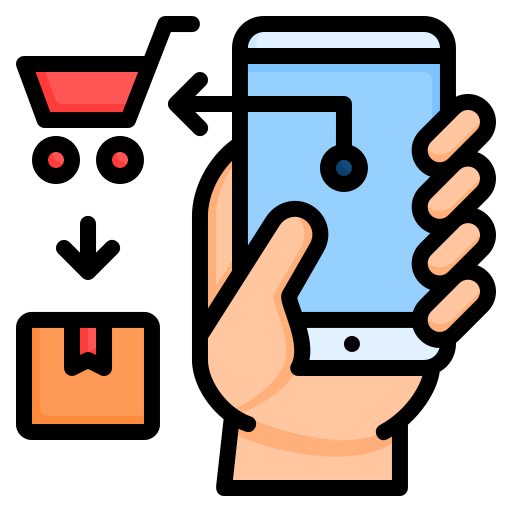
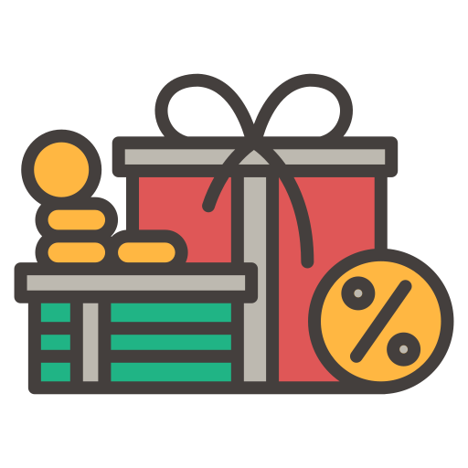

Delivery Order
Nikmati Kemudahan Pesan Antar dan Dapatkan Pangsit Favoritmu via Grabfood

Bumbu Alami
Pangsit dengan Bumbu Alami. Nikmati Kelezatan yang Autentik dan Sehat dari Bahan-bahan Pilihan.

Penawaran Terbaik
Penawaran Terbaik untuk Anda. Rasakan Sensasi Pangsit Lezat dengan Harga Spesial dan Bonus Menarik!